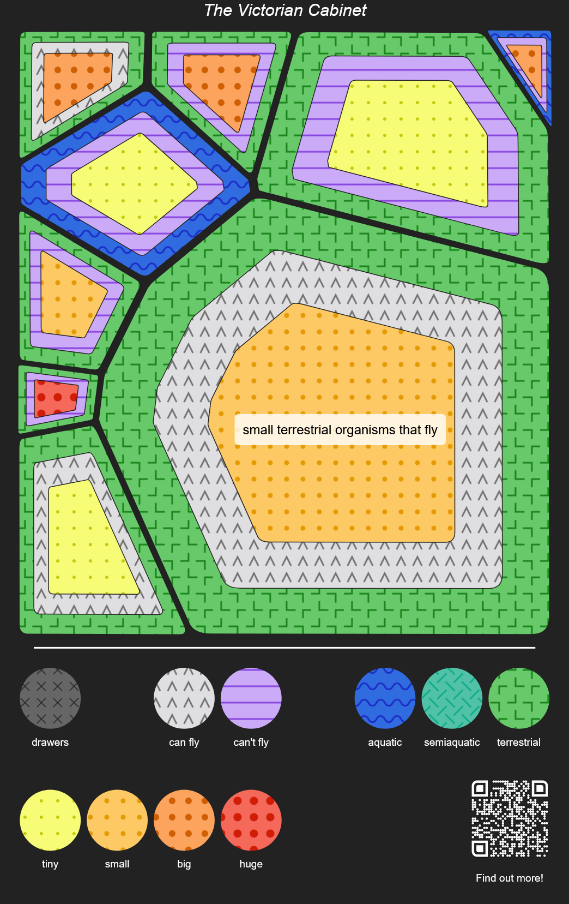

The colourful posters in the Beaty Biodiversity Museum each visualize data about a group of organisms. We call these visualizations "fingerprints" because they're unique to their group of organism! You'll find most of them on rows of cabinets in the museum, but there's also a special one on the Victoria Cabinet which is located in the second row.
The Victoria Cabinet fingerprint looks like this:

The fingerprint is styled to look like cells under a microscope. Each cell represents a type of organism that you can find within the group that the fingerprint represents. Organisms are sorted into types based on whether they can fly, whether they live on land, in water, or both, and how big they are. You can tell what type of organism a cell represents based on the colours and textures within the cell. The size of the cell is based on how many organisms of that type are in the group. The biggest cells get labels on them describing the organism type.
For example, the biggest cell in the fingerprint representing the Victorian Cabinet represents small terrestrial organisms that fly. That cell takes up most of the space in the fingerprint and it's the only one with a label! The cell has three different sections. The outermost one is green with a boomerang texture, meaning that the creatures are terrestrial, or live on land. The innermost section is light orange with medium sized dots, meaning that the creatures are small. The section in between is grey with arrow texture, meaning that the creatures can fly. The legend at the bottom is there to remind you of what all the colours and textures mean while you're looking at the fingerprints!
You can also think about all the cells together. In the Victoria Cabinet, most of the cells represent terrestrial animals, but there are a few aquatic ones. There are also only a small number of huge organisms, all of which are terrestrial and can't fly, so they're represented by the small cell in the left side with big red dots in the middle.
What do you see in the Victoria Cabinet? Which specimens in the cabinet fall into each organism type? Does anything in the fingerprint surprise you? How does it compare to other fingerprints in the museum? What organism type does your favourite animal fall under?